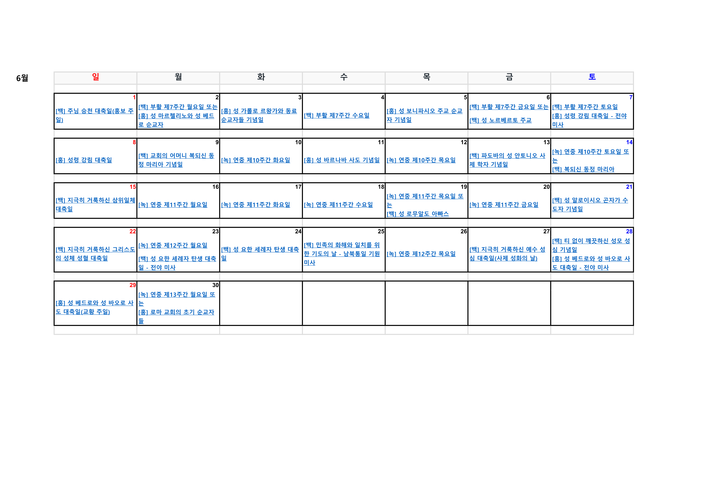

2025년 5월 사목협의회
test 시작 기도(주님의 기도)
신부님 전달사항
일시: 2025년 5월 4일(주일) 교중 미사 후
장소: 마곡수명산성당 회의실
참석자: 사목협의회 위원 일동
참석자 명단
| 직책 | 이름 | 세례명 | 참석여부 |
|---|---|---|---|
| 신부님 | 이동욱 | 도마 | |
| 사목회장 | 정현숙 | 에스델 | |
| 총무/기획분과장 | 노병권 | 프란치스코 | |
| 재정분과장 | 허수열 | 베드로 | |
| 전례분과장 | 김수현 | 글라라 | |
| 사회사목분과장 | 오미요 | 로사 | |
| 청소년분과장 | 이향옥 | 벨라뎃다 | |
| 청소년부분과장 | 갈수연 | 아녜스 | |
| 교육분과장 | 박정례 | 아녜스 | |
| 신심분과장 | 김숙자 | 아녜스 | |
| 선교분과장 | 강현숙 | 수산나 | |
| 시설분과장 | 박상은 | 요셉 | |
| 총구역장 | 오은주 | 엘리사벳 | |
| 총구역총무 | 천성자 | 프란치스카 |
회의 순서 및 내용
-
시작 기도(주님의 기도)
-
신부님 전달사항
- 예비신자 모집 진행사항 (교육분과, 선교분과)
- 입교식: 5월 11일(주일) 오전 11시 미사
- 교리 시작: 5월 18일(주일) 오전 9시 30분
- 세례식: 11월 9일(주일) 오전 11시 미사
- 비고: 신자들의 관심과 협조 요청
- 성모의 밤 행사 준비 사항 (선교분과)
- 일시: 5월 31일(토)
- 준비사항: 화관, 꽃/초 봉헌, 달란트(글, 노래 등)
- 결정사항: 꽃가마 생략, 달란트 간소화
- 사목협의회 엠마오 일정 (총무, 청소년분과장)
- 일정: 5월 24일(토) ~ 25일(주일), 강화도 1박 2일
- 견진성사 진행사항 (교육분과)
- 견진교리 교육: 6/6(금) ~ 7/11(금) 매주 금 19:30 ~ 21:00 (총 6회)
- 견진성사: 7/13(일) 오전 11시 미사 (주교님 집전)
- 비고: 전신자 교육 포함
- 분과별 주요 안건 공유
- 4월 완료, 5월 진행 중, 6~7월 예정 사항 포함
결정사항 요약
- 전신자 명찰 달기 본격 추진
- 사무장 위로금 30만 원 지급 예정
- 스테인리스 난간 봉 교체 검토
- 전례복 교체는 올해 대림시기 목표로 예산 반영
- 견진 교리는 전신자 교육 포함
- 주일학교 교사방은 안드레아방으로 이전 검토
6월 주요 일정
- 6/6 ~ 7/11 매주 금요일: 견진교리 교육
- 6/8 성령강림대축일: 카드 및 9일 기도 준비 (전례분과)
- 6/20 ~ 22: 주임신부님 ME 참석 (교육분과)
- 6/27: 사제 성화의 날
- 6/29: 주임신부님 영명축일 및 본당의 날 (선물/국수잔치?)
7월 주요 일정
- 7/13(주일): 견진성사

